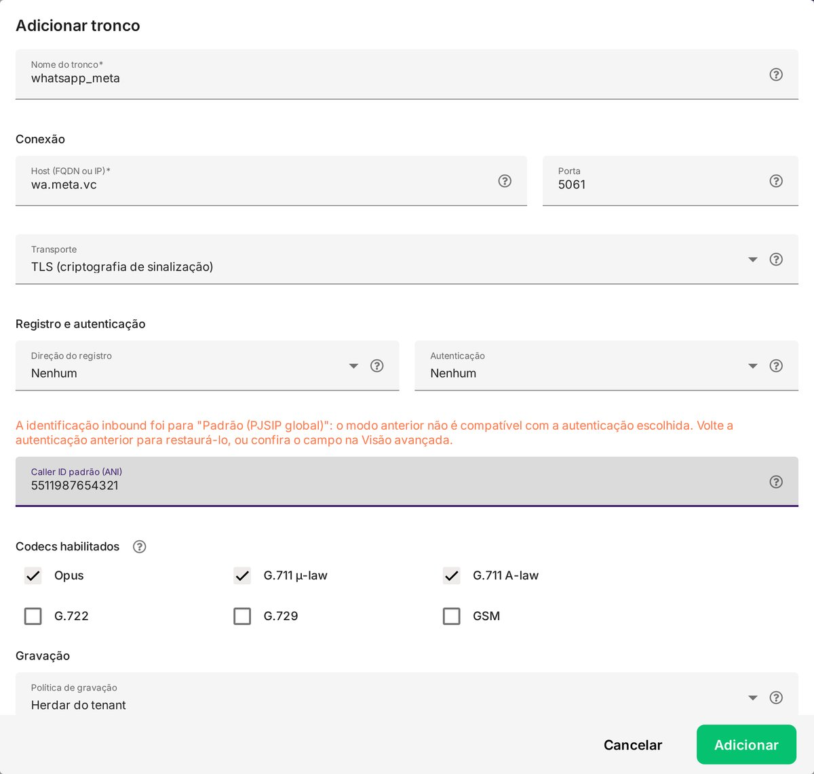
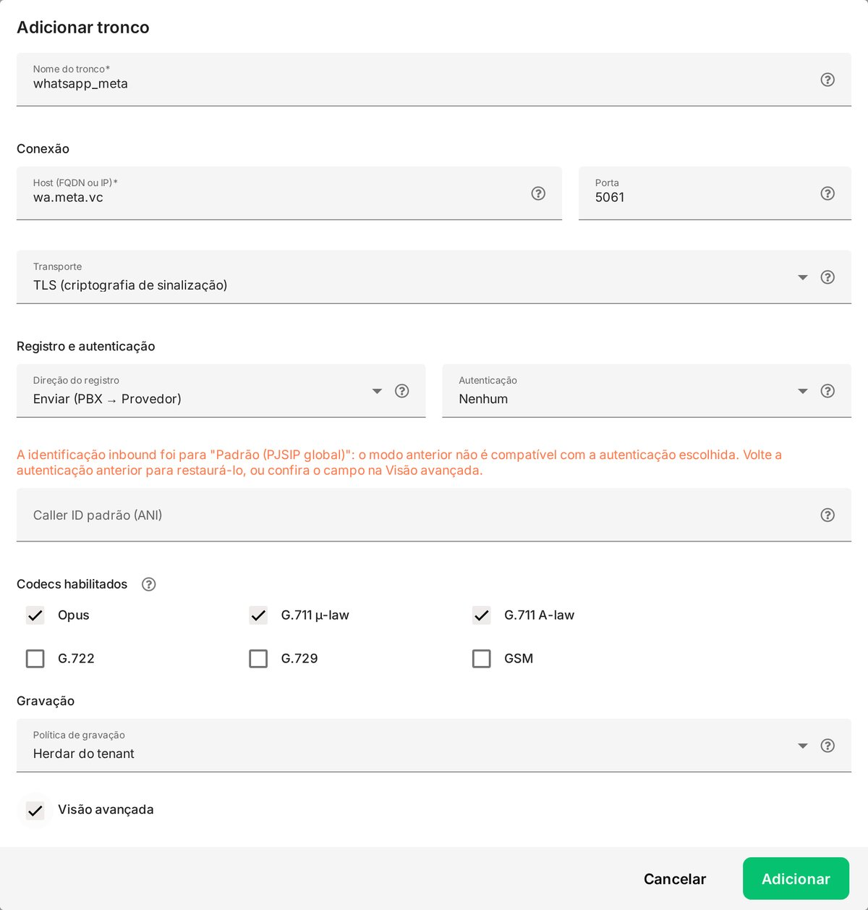
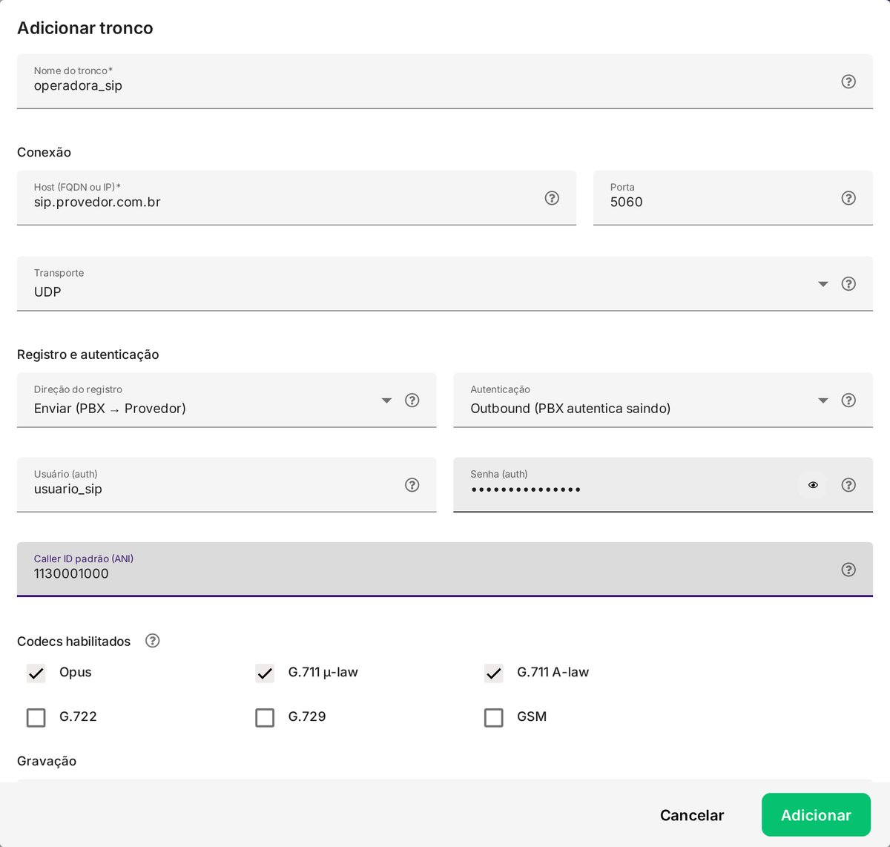
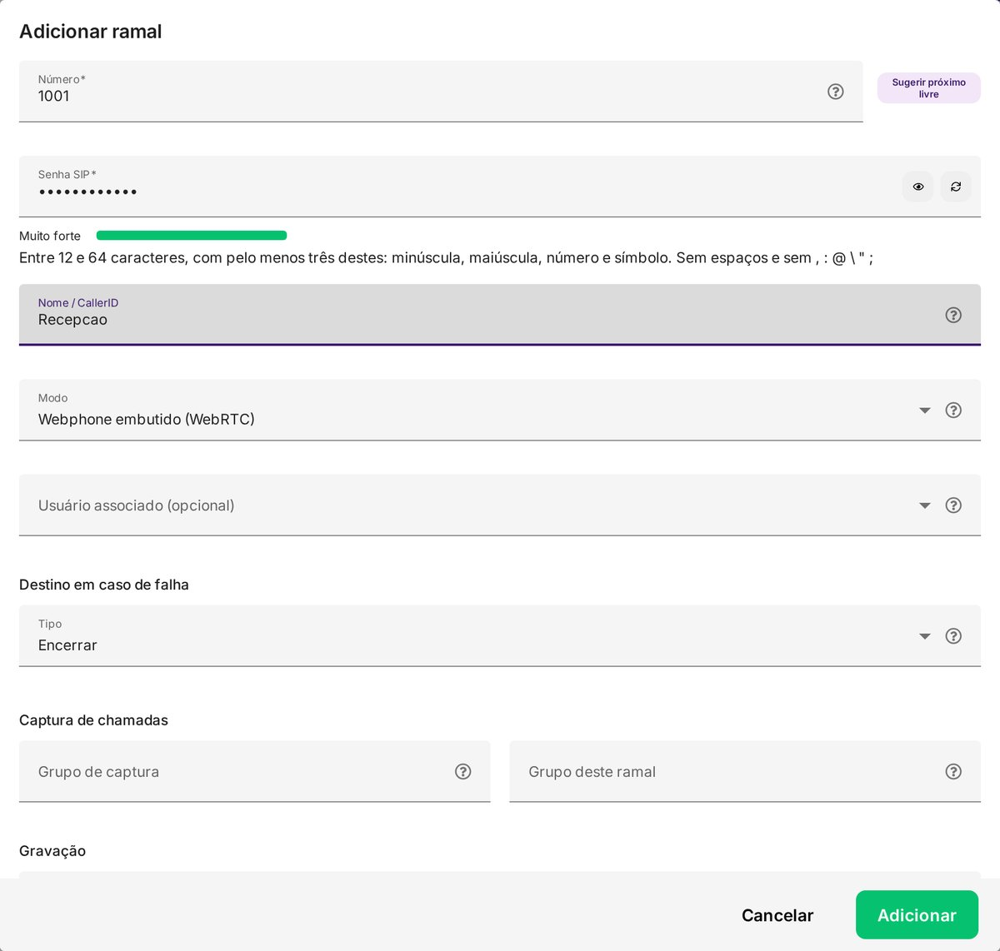
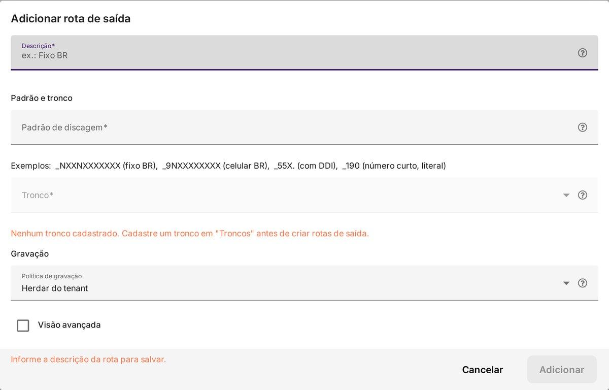
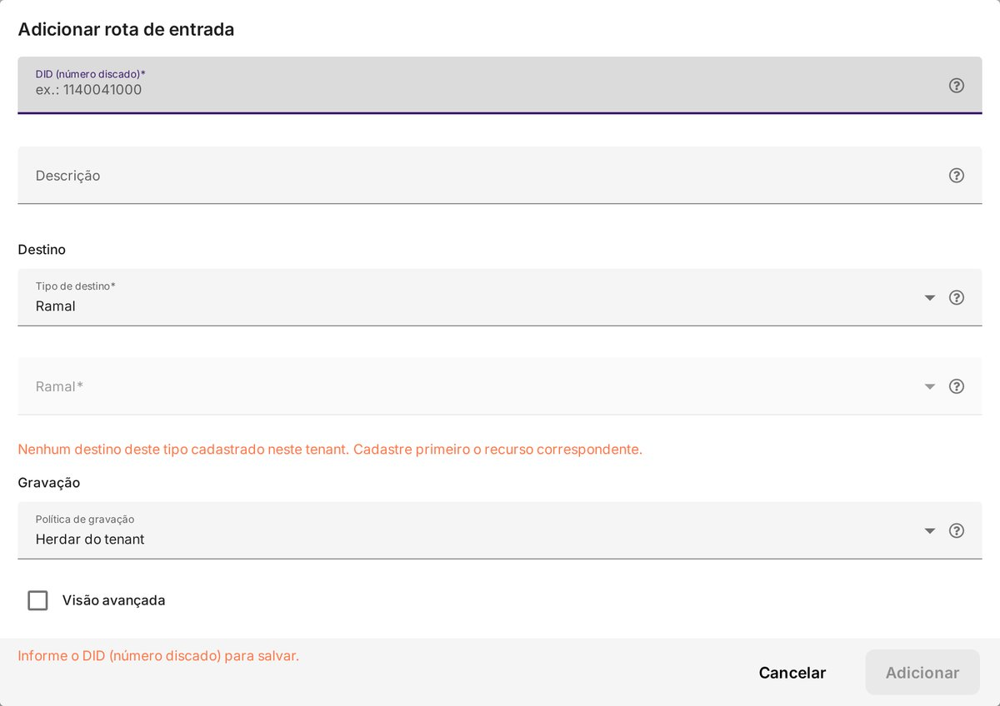
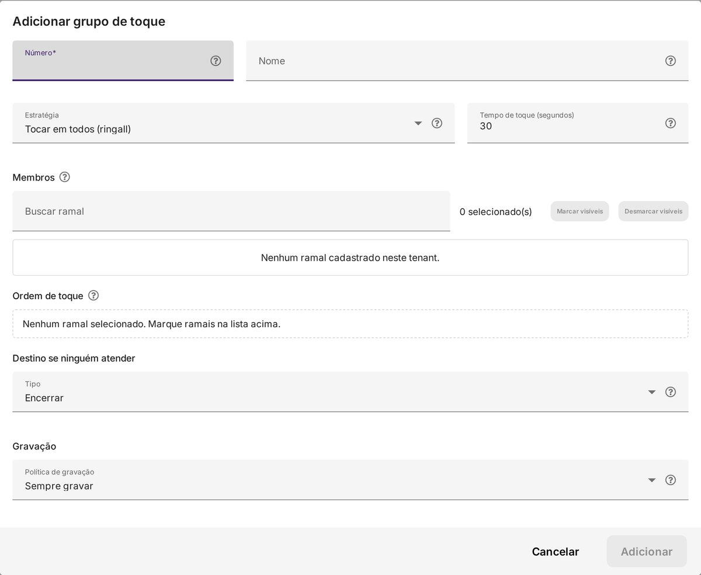
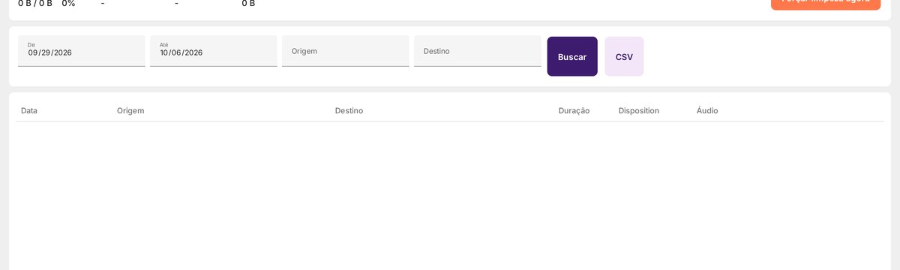
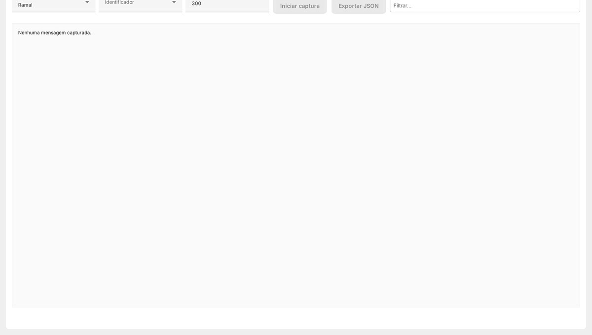

SimplePBX — Guia de Configuração
Como montar a telefonia simplificada do zero, campo a campo, nos mesmos canais que já operamos: WhatsApp Cloud API (voz oficial), tronco de operadora SIP, ramais, rotas, grupos de toque, filas e URA.
Antes de começar
- Módulo habilitado. Com a telefonia simplificada ativa, o menu Telefonia aparece com: Geral, Ramais, Troncos, Rotas de Entrada, Rotas de Saída, Grupos de Toque, Gravações e Debug SIP.
- Se aparecer "Telefonia indisponível", pare: é falha do serviço de telefonia (bootstrap/AMI), não de cadastro. Reaplicar configuração ou recarregar a tela não resolve — acione o suporte.
- Chave de API global. Importar/exportar cadastros e usar a API de telefonia exigem a chave de API global da instância (Configurações > Geral).
- Ordem recomendada: Troncos → Ramais → Rotas de Saída → Rotas de Entrada → Grupos de Toque → Fila/URA. As telas avisam quando falta a peça anterior (por exemplo, "Nenhum tronco cadastrado" ao criar rota de saída).
- Gravação e limites ficam na tela Geral: política de gravação padrão (cascata
não gravar > gravar > indiferente), limites de proteção (chamadas simultâneas, duração máxima, tempo em automação) e IPs confiáveis.
Como o SimplePBX corresponde ao PABX Fácil
A tradução entre o que já existe no servidor Asterisk/FreePBX e as telas do SimplePBX:
| No PABX Fácil (Asterisk/FreePBX) | No SimplePBX |
|---|---|
| Trunk PJSIP (Settings > Trunks) | Telefonia > Troncos |
| Extension (Applications > Extensions) | Telefonia > Ramais |
| Inbound Route | Telefonia > Rotas de Entrada |
| Outbound Route + Dial Patterns | Telefonia > Rotas de Saída (Padrão de discagem) |
| Ring Group | Telefonia > Grupos de Toque |
| Queue | Fila de telefonia do sistema, recebida pelo destino "Fila" |
| IVR / Announcement | URA (IVR) do Fluxo de Automação e URA, recebida pelo destino "URA (IVR)" |
| Custom Destination / ARI Bridge | Elementos de automação/URA (não há equivalente direto) |
| SIP Settings (TLS, Codecs, SRTP) | Visão avançada do tronco + Codecs habilitados |
| CDR (Reports > CDR Reports) | Telefonia > Gravações + Relatórios > CDR e Gravações |
| Console/CLI do Asterisk | Telefonia > Debug SIP |
1. Tronco WhatsApp Cloud API (voz oficial)
É o canal de voz dos números oficiais da Meta. No PABX Fácil ele é um tronco PJSIP seguro (TLS/SRTP/Opus). No SimplePBX, o mesmo é cadastrado em Telefonia > Troncos.
- Obtenha os dados do canal. No painel do sistema, em Configurações > Filas, no número WhatsApp Cloud API Oficial, use o botão "Configurar telefonia". Ele mostra o servidor SIP (com o sufixo
-direct) e a senha do canal. - Abra Telefonia > Troncos e clique em Adicionar.
- Nome do tronco. Um rótulo curto, por exemplo
whatsapp_meta. - Conexão. Em Host informe
wa.meta.vc(servidor oficial de telefonia da Meta); em Porta use5061(TLS); em Transporte escolha TLS (criptografia de sinalização). - Registro e autenticação. A Meta não usa REGISTER nem autenticação SIP tradicional: deixe Direção do registro = Nenhum e Autenticação = Nenhum.
- Caller ID padrão (ANI). Informe o número do WhatsApp com DDI+DDD (ex.:
5511987654321). - Codecs. Marque Opus (voz em banda larga, usada pelo WhatsApp) e deixe desmarcados os codecs estreitos desnecessários.
- Visão avançada. Em Mídia > Media encryption, escolha criptografia de mídia: para transporte TLS, DTLS-SRTP (chaves via handshake) é o par natural; SDES (chaves no SDP) é a alternativa. Em DTMF mode, mantenha RFC 4733.
- Política de gravação e Adicionar.

wa.meta.vc, porta 5061, transporte TLS, registro/autenticação Nenhum e codec Opus.
Resumo dos valores do tronco WhatsApp
| Campo | Valor |
|---|---|
| Nome do tronco | ex.: whatsapp_meta |
| Host (FQDN ou IP) | wa.meta.vc |
| Porta | 5061 |
| Transporte | TLS (criptografia de sinalização) |
| Direção do registro | Nenhum |
| Autenticação | Nenhum |
| Caller ID padrão (ANI) | número do WhatsApp com DDI+DDD |
| Codecs habilitados | Opus |
| Media encryption (avançado) | DTLS-SRTP (ou SDES) |
| DTMF mode (avançado) | RFC 4733 |
| Tipo de match inbound (avançado) | Padrão (PJSIP global) |
2. Tronco de operadora SIP
Para operadoras VoIP (Vivo, Embratel, TotalVoice, Directcall e provedores SIP locais), o tronco exige credenciais e registro.
- Adicionar em Telefonia > Troncos.
- Nome do tronco: ex.:
operadora_sip. - Conexão: Host = endereço SIP da operadora; Porta =
5060; Transporte = UDP (ou TCP, conforme a operadora). - Direção do registro: Enviar (PBX → Provedor) — o sistema registra-se na operadora.
- Autenticação: Outbound (PBX autentica saindo) e informe Usuário (auth) e Senha (auth) fornecidos pela operadora.
- Caller ID padrão (ANI): o número de origem das chamadas.
- Codecs: marque os que a operadora suporta (normalmente G.711 µ-law e A-law; G.729 quando a operadora oferece).
- Defina a Política de gravação e clique em Adicionar.

3. Ramais (WebRTC)
No SimplePBX o atendente fala pelo softphone no navegador (WebRTC) — não é preciso instalar telefone IP. Crie um ramal por atendente e associe-o ao usuário do sistema.
- Telefonia > Ramais > Adicionar. Use Sugerir próximo livre para o número.
- Senha SIP: entre 12 e 64 caracteres, com pelo menos três destes: minúscula, maiúscula, número e símbolo; sem espaços e sem
, : @ \ " ;. A tela mostra a força da senha e recusa sequências comuns. - Nome / CallerID: o que aparece para quem recebe (ex.: Recepção).
- Modo: Webphone embutido (WebRTC) para atender pelo sistema; Aparelho externo para telefone IP/softphone.
- Usuário associado (opcional): vincule o ramal ao usuário do sistema.
- Destino em caso de falha: para onde vai a chamada se o ramal não atender (Encerrar, Ramal, Grupo de toque, Fila ou URA).
- Captura de chamadas: Grupo de captura (quais ramais este pode capturar) e Grupo deste ramal — útil para recepções.
- Visão avançada: permite fixar os Codecs habilitados do próprio ramal.

4. Rotas de Saída
Definem por onde saem as chamadas e qual padrão de discagem casa com cada rota. Equivalem às Outbound Routes/Dial Patterns do PABX Fácil.
- Telefonia > Rotas de Saída > Adicionar.
- Descrição: ex.: Fixo BR, Celular BR.
- Padrão de discagem: aceita os padrões do estilo Asterisk, por exemplo
_NXXNXXXXXXX(fixo BR),_9NXXXXXXXX(celular BR),_55X.(com DDI) e_190(número curto, literal). - Tronco: selecione o tronco por onde a rota sai (é preciso ter um tronco cadastrado antes).
- Política de gravação e Adicionar. A Prioridade define a ordem de avaliação entre as rotas.

_NXXNXXXXXXX) e o tronco de saída.5. Rotas de Entrada
Dizem para onde vai cada chamada que chega, pelo DID (número discado).
- Telefonia > Rotas de Entrada > Adicionar.
- DID (número discado): o número de entrada (ex.:
1140041000). - Descrição: ex.: Recepção SP.
- Destino > Tipo de destino: Ramal, Fila, Grupo de toque, URA (IVR) ou Desligar. Depois selecione o destino específico. Se o tipo ainda não tiver cadastro, a tela avisa ("Nenhum destino deste tipo cadastrado neste tenant").
- Política de gravação e Adicionar.

6. Grupos de Toque
Chamam vários ramais por uma única extensão — para setores que atendem em conjunto.
- Telefonia > Grupos de Toque > Adicionar.
- Número (a extensão do grupo) e Nome.
- Estratégia: Tocar em todos (ringall), Sequencial (hunt), Memória (memory) ou Aleatório (random).
- Tempo de toque (segundos): quanto cada ramal toca antes de passar adiante.
- Membros: busque e marque os ramais e ajuste a Ordem de toque.
- Destino se ninguém atender (Tipo) e a Política de gravação; clique em Adicionar.

7. Filas de telefonia e URA
A fila em si é do sistema (AtenderBem), não do SimplePBX. A chamada chega à fila pelo destino "Fila" de uma rota de entrada (ou de um grupo de toque/ramal). Para o fluxo com menu de opções, use o destino "URA (IVR)", apontando para um Fluxo de Automação e URA.
- Receber direto na fila: rota de entrada com destino Fila → fila de telefonia.
- Com menu (URA): rota de entrada com destino URA (IVR) → automação que, conforme a tecla (DTMF), envia para uma fila, um ramal ou um grupo de toque.
- Ramais fixos: a fila de telefonia lista os ramais que devem tocar; em filas de outros canais isso não se aplica.
- Gravação por etapa: a política de gravação pode ser definida no tronco, na rota, no ramal ou no grupo — a cascata é
não gravar > gravar > indiferente.
8. Gravações e cota
A tela Telefonia > Gravações mostra o uso da cota, a próxima e a última execução da limpeza automática, os bytes liberados e permite forçar a limpeza. Abaixo, a lista por período com Data, Origem, Destino, Duração, Disposition e Áudio (player e download).

9. Debug SIP
Para investigar registro e chamada, o Debug SIP captura o tráfego e permite Exportar JSON. Equivale a ligar o logger do Asterisk (pjsip set logger on), porém pela interface.

10. Conferência final
- Troncos cadastrados e com Status conectado (WhatsApp em TLS 5061; operadora com registro enviado).
- Ramais criados com senha forte, modo correto (WebRTC/aparelho externo) e usuário associado.
- Rota de saída com padrão de discagem e tronco; faça uma chamada de teste.
- Rota de entrada apontando para Fila, Grupo de toque ou URA.
- Fila com os ramais (fixos) e, se houver menu, a URA roteando por DTMF.
- Gravação conforme a política desejada; confira a cota em Gravações.
- Limites e IPs confiáveis revisados em Geral.
Erros comuns ao configurar
| Sintoma | Causa provável |
|---|---|
| "Nenhum tronco cadastrado" ao criar rota de saída | Cadastre o tronco em Troncos primeiro. |
| "Nenhum destino deste tipo cadastrado neste tenant" na rota de entrada | Cadastre o destino (Ramal/Fila/Grupo de toque/URA) antes de escolhê-lo. |
| Senha SIP fraca (recusa ao salvar) | Use 12–64 caracteres com pelo menos três classes e sem sequências comuns. |
| Aviso de identificação inbound ao usar Autenticação = Nenhum | Esperado para o canal da Meta; mantenha "Padrão (PJSIP global)". |
| "Volume excedido (limite 1000 linhas)" ao importar | Divida o arquivo em lotes de até 1.000 linhas. |
| "Telefonia indisponível" em todas as telas | Serviço de telefonia fora do ar — acione o suporte. |